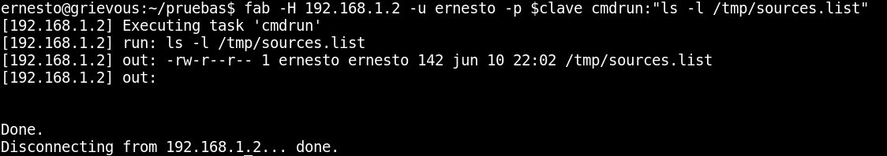

Fabric como un ssh con esteroides en Debian Stretch
Posted on sáb 10 junio 2017 in Tutorial de Linux • 3 min read
Fabric es una librería y herramienta de línea de comandos que genera un flujo de tareas para la automatización de despliegues y tareas administrativas de manera remota.
Este artículo se basa en un vídeo de youtube de una introducción a Fabric.
Se tienen 3 equipos:
- 192.168.1.3: Equipo con Debian Stretch y donde se tiene fabric instalado.
- 192.168.1.2: Equipo con Debian Stretch.
- 192.168.1.6: Equipo con Debian Jessie.
Sólo se necesita un equipo con Fabric, se usa Debian Stretch por que en esta versión de Debian no es tan complicado de instalar Fabric, en Debian Jessie me ha dado algo de problemas, se logra instalar pero da errores en la ejecución (por lo que he investigado, el problema es la librería paramiko).
Instalación de Fabric:
Con pip:
#pip install fabric
Ahora se crea un archivo fabfile.py co el siguiente contenido:
#!/usr/bin/env python
#de la api de fabric de importa run, sudo, task, get y put
from fabric.api import run,sudo,task,get, put
#Se define la tareta cmdrun que ejectua el argumento
@task
def cmdrun(arg):
run(arg)
#Se define la tarea sudorun que ejecuta el argumento vía sudo
@task
def sudorun(arg):
sudo(arg)
#Se define la tarea download que se le pasa un argumento que se descarga en /tmp/
@task
def download(arg):
get(remote_path=arg,local_path="/tmp/",use_sudo=True)
#Se define la tarea upload que se le pasa dos argumentos
#local_path y remote_path.
@task
def upload(arg1,arg2):
put(local_path=arg1,remote_path=arg2,use_sudo=True)
#Se define la tarea host_type que ejecuta uname.
@task
def host_type():
run('uname -s')
Para ejecutar las tareaas se usa el comando fab (se define una variable de entorno llamada clave la cual maneja la clave del usuario):
Ejecución de ps en dos equipos en paralelo:
fab -H 192.168.1.2,192.168.1.6 -p $clave -P cmdrum:"ps -ef|wc -l"

Devuelve la ejecución del ps y la cantidad de líneas que resulta en cada equipo.
Se averigua el tipo de host de cada equipo remoto con host_type:
fab -H 192.168.1.2,192.168.1.6 -p $clave host_type
Acá se muestra de manera secuencial la ejecución de los comandos en los equipos, para que sea de manera paralela se usa la opción -P.
fab -H 192.168.1.2,192.168.1.6 -p $clave -P host_type

Ya la ejecución no se hace de manera secuencial en cada equipo.
Se ejecuta fdisk por medio de sudo:
fab -H 192.168.1.2,192.168.1.6 -p $clave -P sudo:"fdisk -l| grep sda"

El comando devuelve las particiones sda que tiene cada equipo.
Se sube un arhivo sources.list al equipo 192.168.1.2, por medio de upload y se pasa como argumento el archivo local y la ruta remota:
fab -h 192.168.1.2 -p $clave upload:"sources.list","/tmp/"

La figura muestra que la subida del archivo se realizó sin problemas, ahora se revisa en el directorio /tmp/:
La figura muestra que el archivo sources.list se encuentra en /tmp/

Se baja el archivo prueba.txt del equipo 192.168.1.2, por medio de download, pasando la ruta remota del archivo, este archivo se descarga por defecto en /tmp/:
fab -H 192.168.1.2 -p $clave upload:"sources.list","/tmp/"

En este caso se descargo el archivo /home/ernesto/prueba.txt a /tmp/, luego se listo localmente el archivo para verificar que se encuentra en dicho directorio.
Un tutorial más completo sobre Fabric lo pueden encontrar en su sitio.
Otros vídeos de sobre fabric:
¡Haz tu donativo! Si te gustó el artículo puedes realizar un donativo con Bitcoin (BTC) usando la billetera digital de tu preferencia a la siguiente dirección: 17MtNybhdkA9GV3UNS6BTwPcuhjXoPrSzV
O Escaneando el código QR desde la billetera: